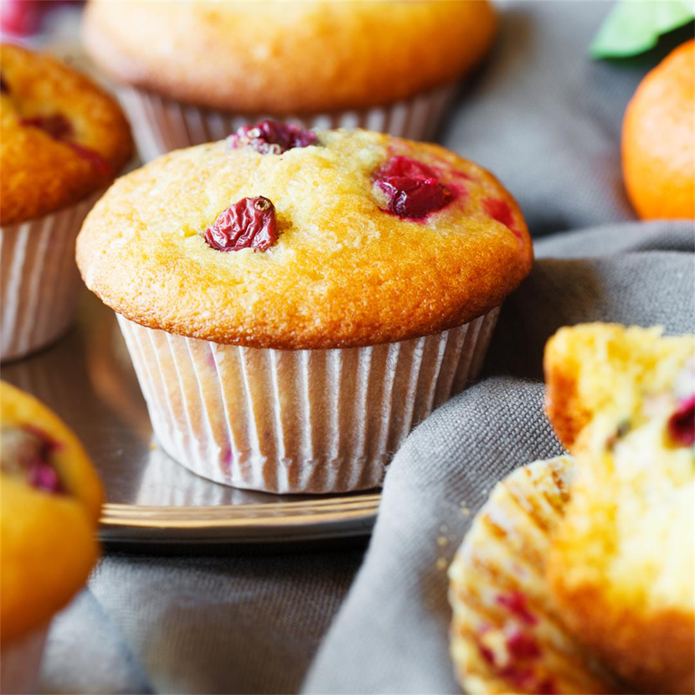
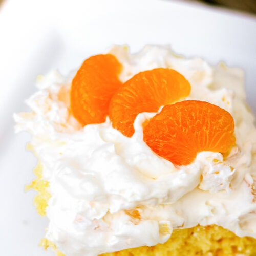

Healthy Recipes
We have 3 options for you to choose.
Our healthy recipes are for you, so if you want to live a good life and eat lunchs that are good for your body, just read this article of our webpage. We have 3 tipes of recipes in every article and we also added an exercise for you to pracise.
Whitout more hesitation, let's start with recipe number one.
Cranberry Tangerine Muffins
A yummy, crumbly muffin recipe filled with loads of tangerine sweetness and just enough cranberry tartness!

Ingredients
- 1 cup dried cranberries
- ¼ cup fresh tangerine juice
- 2 cups unbleached all-purpose flour
- 2 teaspoons baking powder
- ¼ teaspoon salt
- ½ cup unsalted butter, softened
- 2 tablespoons tangerine zest
- 1 cup white sugar (Optional)
- 2 large eggs
- ½ cup milk
- 1 teaspoon white sugar, divided (Optional)
Instrucctions
- Preheat oven to 375 degrees F (190 degrees C). Grease 12 muffin cups or line with paper liners.
- Simmer dried cranberries and tangerine juice in a small saucepan over medium heat; remove pan from heat and set aside to cool.
- Whisk flour, baking powder, and salt into a bowl. Mix butter, tangerine zest, and 1 cup sugar in a separate large bowl, using an electric mixer, until mixture is light and fluffy, about 2 minutes. Scrape down sides of bowl and beat eggs into butter mixture, one at a time, until thoroughly combined.
- Gently fold flour mixture into the butter mixture, alternating with milk in two additions, until batter is just mixed. Fold cranberries and juice into batter. Pour batter into prepared muffin cups and top with 1 teaspoon sugar.
- Bake in the preheated oven until muffins are golden brown, 20 to 25 minutes. Cool in pan on a rack.
Tangerine Orange Cake
This is the same as an Orange Cake with Orange Topping but made with tangerine-orange juice.
Ingredients
- 1 (18.25 ounce) package yellow cake mix
- 1 (3 ounce) package instant lemon pudding mix
- ¾ cup tangerine juice
- ½ cup vegetable oil
- 4 eggs
- 1 teaspoon lemon extract
- ⅓ cup tangerine juice
- 1 cup white sugar
- ¼ cup butter
Instrucctions
- Preheat oven to 325 degrees F (165 degrees C). Grease a 10 inch Bundt pan or line a muffin pan with paper cups.
- In a medium bowl, stir together the cake mix and instant pudding. Add the tangerine juice, oil, eggs and lemon extract, mix until well blended. Pour into the prepared pan or pans.
- Bake for 35 to 40 minutes in the preheated oven, until the cake springs back to the touch. For cupcakes, bake for 15 to 17 minutes. Let cool in the pan for 10 minutes before removing from pan to cool completely.
- In a small saucepan, combine the remaining tangerine juice, sugar and butter over medium heat. Stir frequently until the mixture is smooth. Drizzle over cooled cake or cupcakes.
Pineapple Tangerine Bread
Take advantage of tangerines when they are in season with this easy to make this fruity bread.

Ingredients
- 1 (20 ounce) can crushed pineapple with juice
- 1 egg
- ⅓ cup butter, melted
- 2 teaspoons grated tangerine zest
- 2 ½ cups all-purpose flour
- ¾ cup white sugar
- ¾ cup wheat germ
- 3 teaspoons baking powder
- 1 teaspoon salt
- ½ teaspoon baking soda
Instrucctions
- Preheat oven to 350 degrees F (175 degrees C). Grease a 9x5 inch loaf pan. Drain pineapple well, pressing out excess syrup with back of spoon. Reserve 3/4 cup of the syrup.
- In a medium bowl, combine pineapple, reserved syrup, egg, butter and grated tangerine zest. Set aside.
- In a large bowl, combine flour, sugar, wheat germ, baking powder, salt and baking soda. Make a well in the center, and pour in pineapple mixture. Stir just until blended. Pour batter into greased 9 x 5 inch loaf pan.
- Bake for 60 to 70 minutes, or until a toothpick inserted into the center comes out clean. Cool in pan 15 minutes. Remove from pan; cool completely on wire rack.
Push-ups
Drop and give me 20! Pushups are one of the most basic, yet effective, body weight moves you can perform because of the number of muscles that are recruited to perform them.
How do I do push-ups?
- Start in a plank position. Your core should be tight, shoulders pulled down and back, and your neck neutral.
- Bend your elbows and begin to lower your body down to the floor. When your chest grazes it, extend your elbows and return to the start. Focus on keeping your elbows close to your body during the movement.
- Complete 3 sets of as many reps as possible.